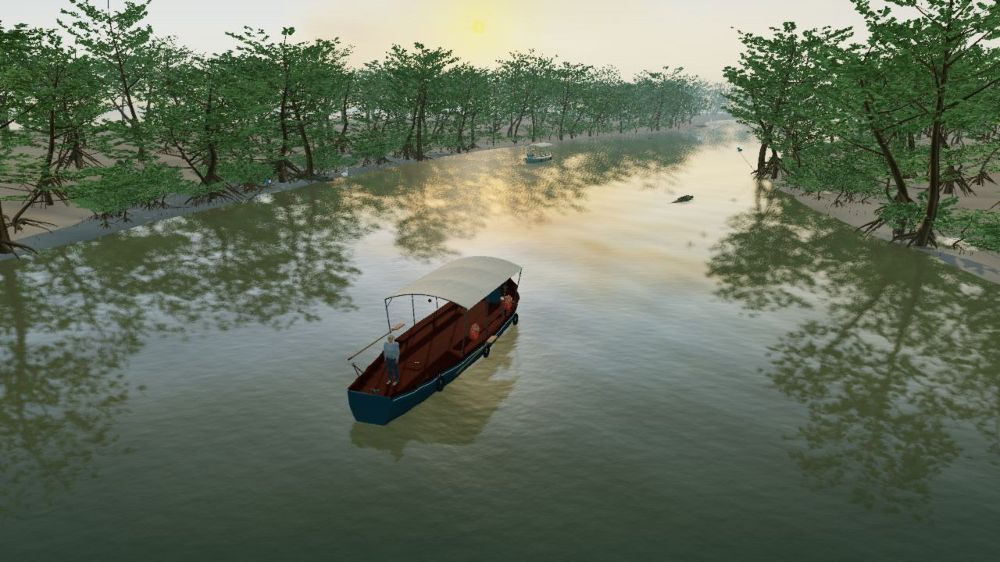
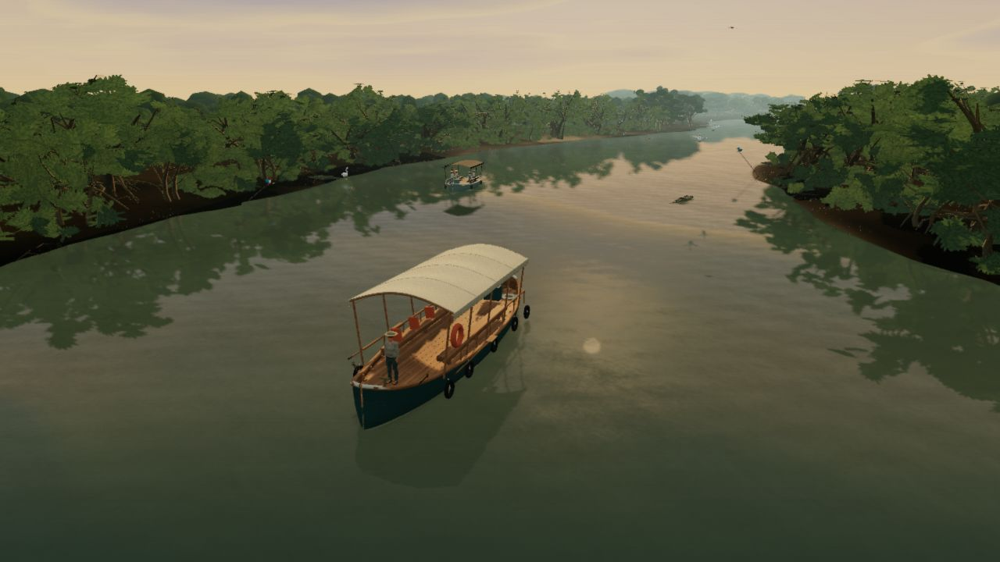
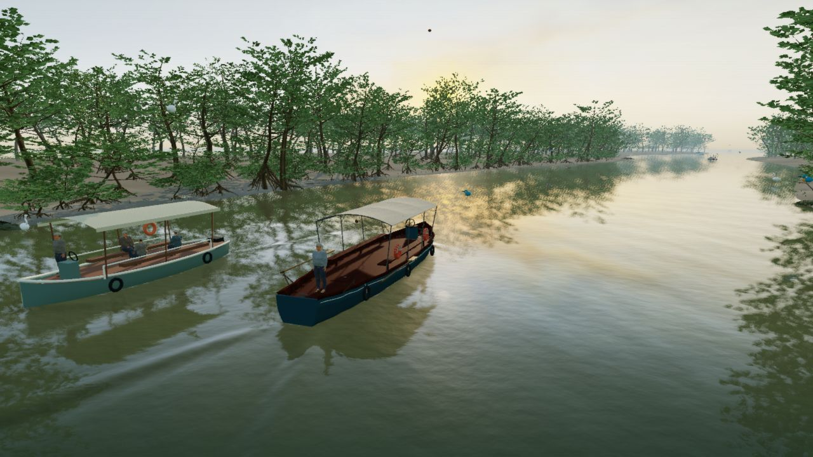
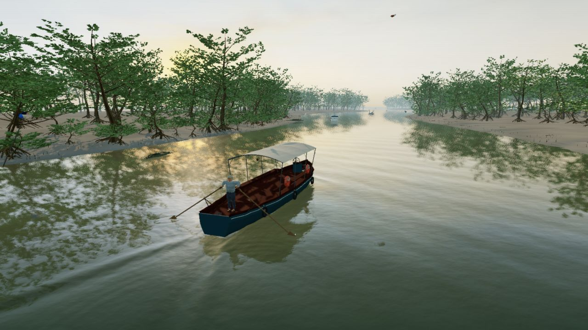
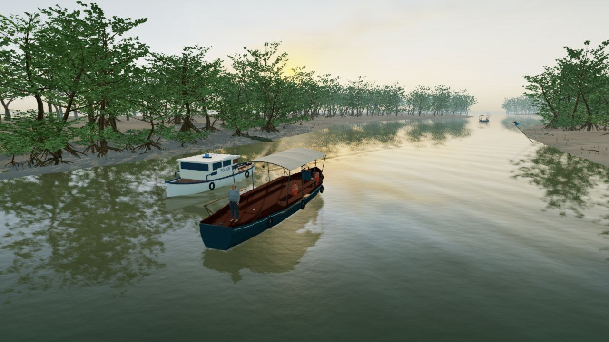
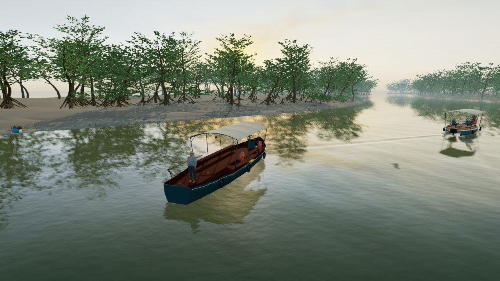

Into Bhitarkanika
A different High.
A separate timber launch and mangrove landscape, photographic cloud radiance, and water that retains the wake behind a turn. This review opens the same current local build shown in the new captures. It does not open the published GitHub Pages version.


PREVIOUS HIGHREBUILT HIGHEquivalent locked camera, 48° field of view, boat pose, time (42 seconds) and lighting preset. Captures are 1280 × 720 CSS pixels; the rendering buffer is also 1280 × 720 at DPR 1. Traffic can differ. Standard has no Storm or Night presets, so those comparisons use previous High.


Ordinary views along the route
These additional views show High's new default framing and different places, without locking the camera to the previous version.


The new default Follow camera.


The existing Row controls drive the boatman and working oars.


A sunlit tidal margin.


A wider opening between groves.
At a fixed 1280 × 720 drawing buffer on this AMD integrated GPU: Standard 60.0 FPS, previous High 44.0 FPS, rebuilt High 40.3 FPS. Rebuilt High GPU time averaged 19.53 ms; frame-time p95 was 33.5 ms, with no frames above 50 ms in the 68.5-second warmed stationary run. These are measurements, not a device-wide promise. Full counters are in measurements.json; the project validation report records the method and limits.